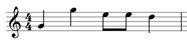
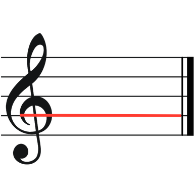

Takter og rytmene som fyller dem er kun et aspekt ved musikk. Det neste vi skal se på er tonene som gir musikken sin lyd. Det hadde fort blitt kjedelig om man bare klappet rytmer.

Her ser du en takt med fjerdedeler og åttendeler. Helt til venstre, før taktarten, kan du se enda et tegn. Denne kalles en G-nøkkel.
Hvis du ser nærmere på selve takten, kan du også se at den består av fem horisontale/liggende streker. Disse kalles notelinjer.
G-nøkkelen og disse linjene bestemmer hvilken tonehøyde hver av notene har.
Med en notes tonehøyde mener vi hvordan den noten høres ut. Kombinerer man dette med noteverdier, så har man en bestemt lyd over en bestemt tid, og det er vel nesten definisjonen på musikk?
Det finnes praktisk sett 12 forskjellige tonehøyder, men disse kommer vi tilbake til litt senere i kapitellet.
Du lurer kanskje på hvorfor det kalles en G-nøkkel? Den kalles det fordi den viser hvilken notelinje tonen G ligger på. Den ser jo litt ut som en G også.

Det kan kanskje være litt vanskelig å se, så du kan tenke deg at du skulle tegne en G-nøkkel. Hvor ville du startet? Det enkleste ville vært å starte innerst, og så tegne utover. Og det er der man starter å tegne G-nøkkelen at tonen G ligger, den nest nederste notelinjen.